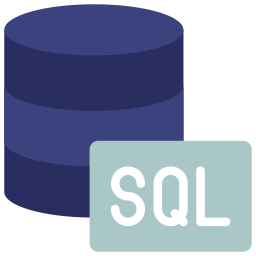

In this project, Tableau was used to analyze and visualize sales data from various US states, covering both B2B and B2C segments for technology products, furniture, and office equipment. Trends and patterns in sales were highlighted, identifying states with the highest and lowest performance. This analysis enables the easy identification of strategic improvement opportunities and the development of more effective marketing plans for both business-to-business and business-to-consumer segments.

This analysis seeks to predict medical expenses based on patients' information. The objective was to develop a predictive model capable of estimating medical costs. Through statistical modeling and machine learning techniques, the aim is to uncover patterns and relationships within the data that can accurately forecast medical expenses for future patients.

This COVID-19 project, executed with Tableau, was designed to provide a comprehensive overview of the pandemic. I created an interactive dashboard tracking daily case increases and displaying total confirmed cases per date. It also features a list of the top ten countries by confirmed cases, offering insight into the hardest-hit regions during the pandemic.

For this project, the goal is to estimate the parameters m and ω of a Nakagami distribution utilizing maximum likelihood estimation (MLE) and bootstrap resampling techniques.

With this project,I embarked on a journey to manage vast volumes of pandemic data through SQL Server.Leveraging the power of SQL,I delved into the data,allowing me to better understand the pandemic's evolution and uncover patterns and trends.

This project involves creating an Excel spreadsheet for employee data management. The spreadsheet provides a flexible environment for recording basic information, task allocation, performance assessment, and statistical analysis. The final dashboard offers an overview of key metrics and statistics, thus providing a comprehensive control panel for managing and analyzing employees.

This project involved data processing in the Power Query Editor, where data cleansing was performed. Through this process, possible duplicate records were removed, inaccuracies were corrected, and any missing or unwanted data was processed. Subsequently, the data was analyzed and visualized through a dashboard. This dashboard included various charts, graphs, and metrics that provide a comprehensive view of the key measurements and statistical data related to employee management.